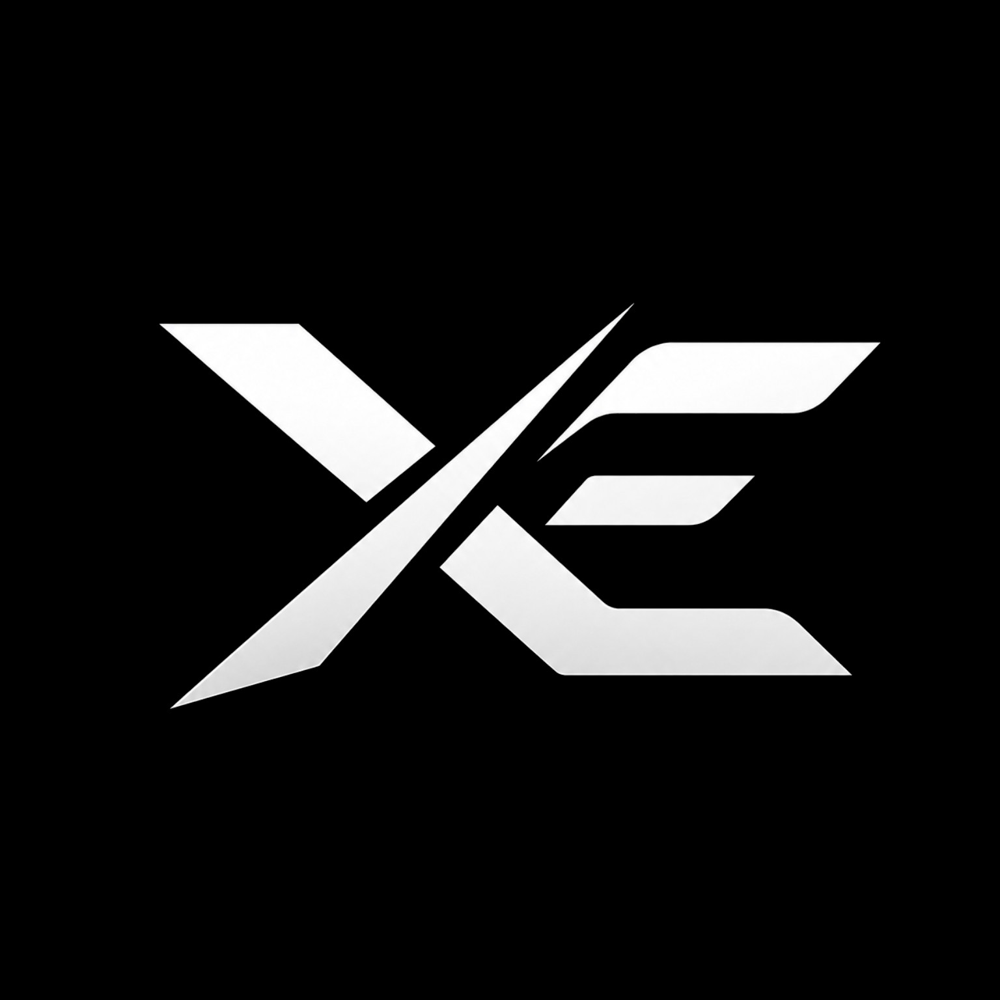

01
Web development
Distinctive websites with responsive layouts, thoughtful interactions and a strong technical foundation.
↗

XE DEVELOPMENTSWebsites, Discord systems and automation for people who care about how their digital presence actually feels.
Distinctive websites with responsive layouts, thoughtful interactions and a strong technical foundation.
Custom bots built around the way your community works — moderation, utilities, commands and automation.
Complete server systems, permissions, roles and integrations that make a Discord community easier to run.
Small tools and connected workflows that remove repetitive work and let your systems talk to each other.
“Good digital work should feel obvious when you use it — even when the engineering underneath is anything but.”
Every project starts with what it needs to accomplish. The visual language comes after that.
That means fewer decorative decisions for the sake of looking “techy” — and more decisions that make the product clearer, faster and more memorable.
XE Developments is an independent development brand focused on the web and Discord.
Rather than trying to build everything for everyone, the focus stays narrow: interfaces that feel intentional, systems that solve real problems, and code that can be maintained after the launch.